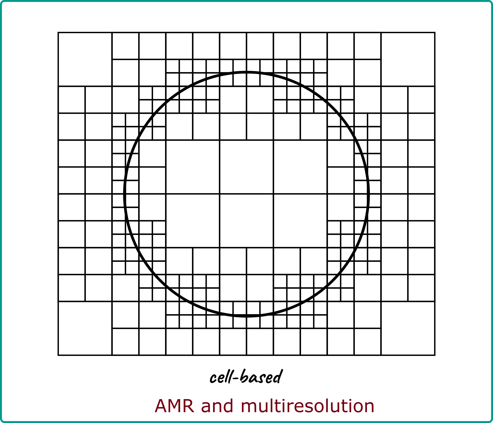
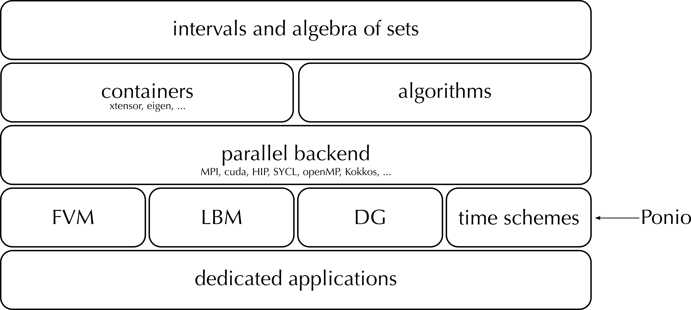
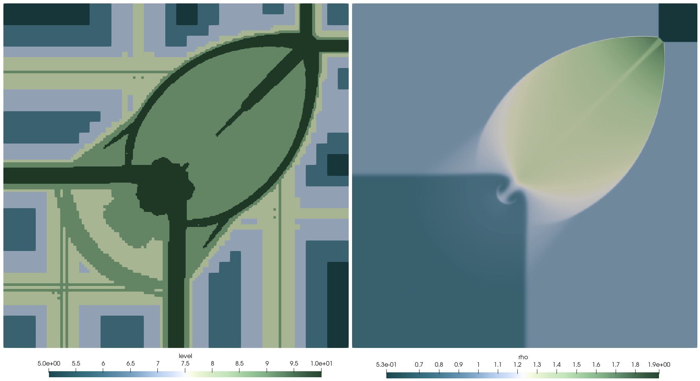
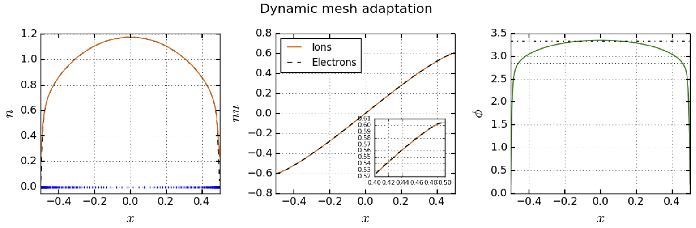

Numerical analysis of mesh adaptation methods and its impact on the simulation of PDEs
The present work is the result of a team work involving
- Thomas Bellotti (CR CNRS - EM2C - Fédé Maths CS)
- Loïc Gouarin (IR École polytechnique, CMAP)
- Josselin Massot (IR École polytechnique, CMAP)
- Pierre Matalon (IR École polytechnique, CMAP)
- Laurent Séries (IR École polytechnique, CMAP)
- Christian Tenaud (DR CNRS - EM2C - Fédé Maths CS)

Burgers equation - small hat problem
\[ \partial_t u + \partial_x \left ( f(u) \right ) = 0, \quad t \geq 0, \quad x \in \mathbb{R}, \qquad f(u) = \dfrac{u^2}{2}, \]
Consider the Cauchy problem with initial cond.
\[ u^0(x)=\left\{% \begin{array}{cc} \hfill 0, & x \in ]- \infty,-1]\cup [1, + \infty[,\\ x+1, & x \in ]-1,0], \hfill \\ 1-x, & x \in[0,1[. \hfill \\ \end{array} \right. \]
- Shock formation at time \(T^* = 1\)
- Leading to irreversible solution
- RH condition governs shock dynamics

Burgers equation - small hat problem
\[ \partial_t u + \partial_x \left ( f(u) \right ) = 0, \quad t \geq 0, \quad x \in \mathbb{R}, \qquad f(u) = \dfrac{u^2}{2}, \]
Consider the Cauchy problem with initial cond.
\[ u^0(x)=\left\{% \begin{array}{cc} \hfill 0, & x \in ]- \infty,-1]\cup [1, + \infty[,\\ x+1, & x \in ]-1,0], \hfill \\ 1-x, & x \in[0,1[. \hfill \\ \end{array} \right. \]
- Shock formation at time \(T^* = 1\)
- Leading to irreversible solution
- RH condition governs shock dynamics

Burgers equation - small hat problem
\[ \partial_t u + \partial_x \left ( f(u) \right ) = 0, \quad t \geq 0, \quad x \in \mathbb{R}, \qquad f(u) = \dfrac{u^2}{2}, \]
Consider the Cauchy problem with initial cond.
\[ u^0(x)=\left\{% \begin{array}{cc} \hfill 0, & x \in ]- \infty,-1]\cup [1, + \infty[,\\ x+1, & x \in ]-1,0], \hfill \\ 1-x, & x \in[0,1[. \hfill \\ \end{array} \right. \]
- Shock location \(\varphi(t)=\sqrt{2(1+t)}-1\)
- Propagation speed shock \(\sigma(t)={1}/{\sqrt{2(1+t)}}\)
- Shock amplitude \([u]=\sqrt{{2}/{(1+t)}}\)
Wavelets
Decomposition of the solution on a wavelet basis [Daubechies, ’88], [Mallat, ’89] to measure its local regularity. “Practical” approach by [Harten, ’95], [Cohen et al., ’03].
Projection operator
Prediction operator at order \(2 \gamma+1\)
\[ {\hat f}_{\ell+1,2 k}={f}_{\ell, k}+\sum_{\sigma=1}^\gamma \psi_\sigma\left({f}_{\ell, k+\sigma}-{f}_{\ell, k-\sigma}\right) \]

Details are regularity indicator \[ {\mathrm{d}}_{\ell, {k}}:={f}_{\ell, {k}}-{\hat{f}}_{\ell, {k}} \]
Let \(f \in W^{\nu, \infty}\) (neigh. of \(C_{\ell, k}\) ), then \[ \left|{\mathrm{d}}_{\ell, k}\right| \lesssim 2^{-\ell \min (\nu, 2 \gamma+1)}|f|_{W^{\min (\nu, 2 \gamma+1), \infty}} \]
Fast wavelet transform:
means at the finest level can be recast as means at the coarsest level + details \[ \begin{array}{rlr} {f}_{\overline{\ell}} & \Longleftrightarrow & \left({f}_{\underline{\ell}}, {{d}}_{\underline{\ell} +1}, \ldots, {d}_{\bar{\ell}}\right)\\ \end{array} \]
Examples
| min level | 1 |
| max level | 12 |
| ε | 10-3 |
| compression rate | 96.29% |
| error | 0.00053 |

Examples
| min level | 1 |
| max level | 12 |
| ε | 10-3 |
| compression rate | 97.46% |
| error | 0.002 |

Time evolution of PDEs
- Finite volumes with global time step \(\Delta t = \Lambda(\Delta x)\)
- Use dynamic mesh refinement
Mesh updated using “old” information at time \(t\) to accommodate the one at time \(t + \Delta t\)
- Propagation of information : add security cells
- Formation of singularities : (regularity index: \(\nu =0\), \(\mu = \min(\nu,2\gamma +1)\)) refine if \[ \left|{\mathbf{d}}_{\ell, k}\right| \geq \epsilon_{\ell}\,2^{d+\mu} \]

Finite volumes / conservation / order
Flux evaluation at interfaces between levels
Using the prediction operator allows to evaluate fluxes at the same level

Mesh adaptation




samurai
Roadmap





 10 July 2025
10 July 2025
Comments on theorem